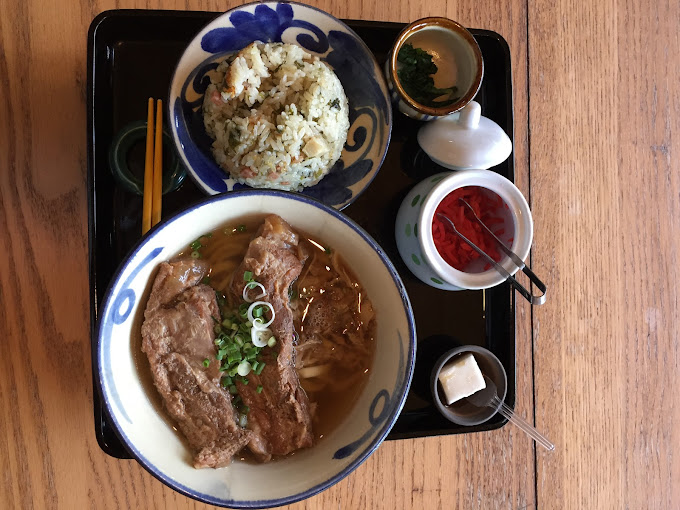

木々に囲まれたどこか懐かしい古民家で、県産食材で織りなす心あたたまる沖縄そばを。
現在、店舗の改装工事に伴い臨時休業中です。
2025年9月中旬ごろにリニューアルオープン予定です。
スープのこだわり
豚だし骨、鶏ガラ、カツオ節をベースに化学調味料を一切使わずに丁寧に仕上げました。
お肉のこだわり
三枚肉、テビチ、軟骨ソーキはいずれもスープとの相性にこだわった自家製タレでじっくり煮込みました。
お店のこだわり
新鮮な県産食材を厳選し、安心・安全な調理で、澄んだ後味の独特な風味をお届けします。緑に囲まれた古民家で、心ほどける時間を。
店舗の内観（客席）

店舗の外観
店舗案内
住所：沖縄県中城村屋宜824-1
電話：098-895-2280
営業時間：11:00〜16:00
定休日：日曜日
アクセス
お知らせ
店舗の改装工事の為、臨時休業中です。
リニューアルオープンは2025年9月中旬ごろを予定しています。